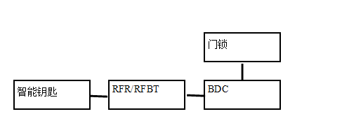

Описание: Данная дистанционная противоугонная система использует двухкнопочный брелок: кнопка запирания служит для постановки на охрану, а кнопка отпирания — для снятия с охраны.
Состояние предварительной охраны
1. Переход в режим предварительной охраны: когда питание автомобиля находится в положении OFF и все двери закрыты, по шине BDC передается сигнал "Запирание", четыре двери запираются, и автомобиль одновременно переходит в состояние предварительной охраны.
2. Выход из режима предварительной охраны: в течение времени предварительной охраны Tp (Tp может настраиваться на 15 s, 25 s, 35 s, 45 s) при выполнении любого из следующих условий автомобиль выходит из состояния предварительной охраны и переходит в состояние снятия с охраны.
2.1 Открыта любая дверь;
2.2 Передача питания изменилась на положение, отличное от ON;
2.3 Получен сигнал дистанционного/беспроводного/удаленного/PE-отпирания;
2.4 Получен сигнал "Аутентификация IMMO успешна", переданный по шине;
2.5 Если в течение времени предварительной охраны Tp багажник открывается дистанционно, автомобиль остается в состоянии предварительной охраны; после завершения отсчета Tp после закрытия багажника автомобиль переходит в состояние охраны;
2.6 Если ни одно из вышеуказанных условий не выполнено, по истечении Tp автомобиль переходит из состояния предварительной охраны в состояние охраны.
Состояние охраны
Переход в режим охраны: Условия перехода в режим охраны описаны в функции выхода из предварительной охраны. Подробности см. в разделе функции выхода из предварительной охраны. Условия перехода в режим охраны в функции вторичной противоугонной защиты. Подробности см. в функции вторичной противоугонной защиты.
Снятие с охраны: Независимо от состояния автомобиля, когда питание автомобиля находится в положении OFF, при поступлении сигнала "Отпирание" по шине BDC автомобиль переходит или остается в состоянии снятия с охраны. Когда питание автомобиля находится в положении, отличном от OFF, при получении BDC от шины EMS сигнала обратной связи аутентификации IMMO со значением "Успешно" автомобиль переходит или остается в состоянии снятия с охраны.
Состояние активированной противоугонной защиты
1. Активация противоугонной системы:
1.1 Открытие любой двери без дистанционного отпирания или без получения сигнала "Отпирание" от шины PEPS;
1.2 Открытие двери багажника без дистанционного отпирания багажника или без получения сигнала "Отпирание багажника" от шины PEPS.
2. Логика аварийной сигнализации при активации противоугонной системы: в зависимости от комплектации логика состояния активации выглядит следующим образом: по истечении времени TW активации противоугонной системы (TW может настраиваться на 5 s, 10 s, 15 s) мигание указателей поворота продолжается в течение 5 минут, при этом звуковой сигнал издает 56 звуковых сигналов, а индикатор противоугонной системы быстро мигает; если по истечении 5 минут мигания указателей поворота поступает сигнал вторжения, снова запускается 5- минутная световая сигнализация и 56 звуковых сигналов.
3. Снятие с охраны: Когда автомобиль находится в состоянии активированной противоугонной защиты, при получении сигнала "Отпирание" от шины PEPS можно снять активацию противоугонной системы, и автомобиль переходит в состояние снятия с охраны, при этом указатели поворота мигают четыре раза, режим работы зуммера соответствует подсказке выхода из состояния активированной противоугонной защиты. Если по шине получен сигнал успешной аутентификации IMMO, отправленный EMS, активацию противоугонной системы также можно снять, автомобиль переходит в состояние снятия с охраны, при этом указатели поворота мигают четыре раза, режим работы зуммера соответствует подсказке выхода из состояния активированной противоугонной защиты, а индикатор противоугонной системы гаснет.
4. Состояние BDC по умолчанию при поставке с завода является исходным, и при поставке необходимо задать начальный пароль (см. файл диагностики BDC). Когда BDC находится в исходном состоянии, состояние функции защиты автомобиля является состоянием охраны. Если пароль BDC является начальным паролем, то при активации противоугонной системы световая и звуковая сигнализация отсутствуют, но сигнал состояния, передаваемый по шине BDC, по-прежнему находится в состоянии охраны (т. е. в состоянии arm); если пароль BDC не является начальным паролем, при активации противоугонной системы срабатывает нормальная логика выполнения (т. е. с наличием световой и звуковой сигнализации).
Вторичная противоугонная защита
После перехода автомобиля из состояния охраны или предварительной охраны в состояние снятия с охраны, если в течение 30 секунд двери не открываются, BDC запирает все двери, и автомобиль переходит в состояние охраны. Примечание: При повторном включении питания BDC должен сохранять состояние противоугонной системы, предшествующее отключению питания. Кроме того, при заводской комплектации состояние BDC является состоянием охраны.
